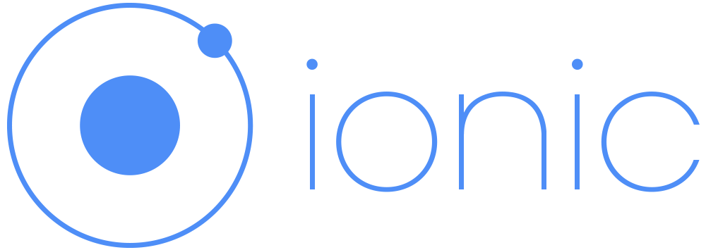
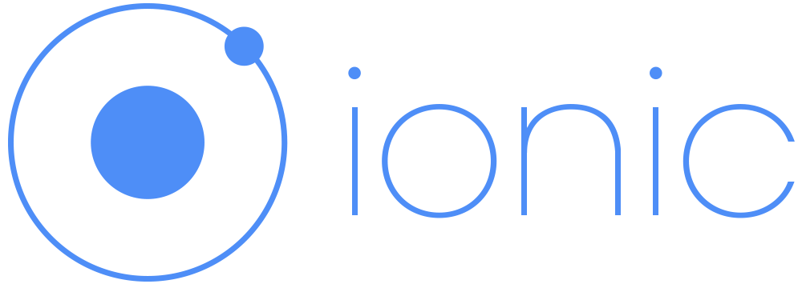

Who is using TypeScript?
 

Basic Example
let size: number = 3
let person: string = "Marco"
let integers: Array = [1, 2, 3]
let elem: HTMLElement = document.getElementById('my-elem')
size = 'Polo' //Type 'string' is not assignable to type 'number'.
Special "any" type allow all kinds of values
let foo: any
foo = 2
foo = 'Paris'
foo = [1, 2, 3]
Complex types can be defined inline
let user: {
name: string,
age: number,
address: {
city: string,
country: string
}
}
user = { name: 'Marco', age: 20 } // Property 'address' is missing
Properties can be optional if followed by "?"
let user: {
name: string,
age: number,
address?: {
city: string,
country: string
}
}
user = { name: 'Marco', age: 20 } // OK
Interface
interface User {
name: string
age: number
address: Address
}
interface Address {
city: string
country: string
}
let user: User
Interface
class Person {
title: string
protected name: string
private lastname: string
}
const user = new Person()
user.title = 'MR'
user.name = 'Rob' // Error
user.lastname = 'Willson' // Error
Installation
npm i typescript@next -g
tsc hello.ts